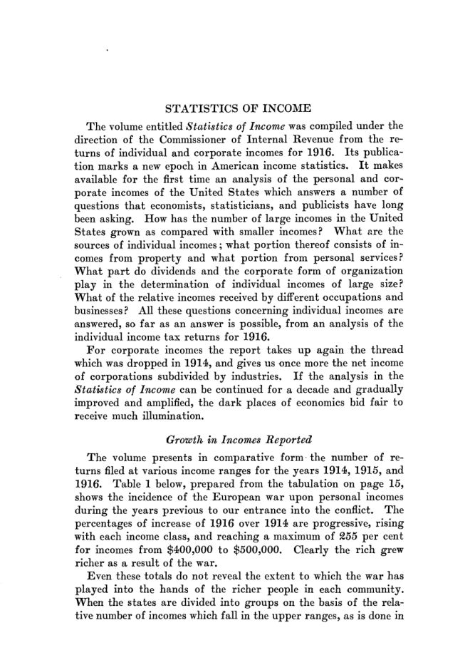

Friday, 1919: o que as declarações de 1916 mostraram
Leitura: 7 min
Friday examina o primeiro volume de Statistics of Income, com as declarações de 1916: os ricos ganharam mais com a guerra, um quarto da renda declarada era dividendos e o lucro das empresas quase triplicou desde 1909.


Em 1916, onze clérigos americanos declararam renda acima de 50.000 dólares, e cinquenta e dois professores, do jardim de infância à universidade, acima de 25.000. David Friday cita os números para mostrar um defeito de uma tabela, e não a prosperidade do clero: a classificação por ocupação somava a renda de todas as fontes. O defeito, porém, aparece num volume que ele considera o início de uma nova época nas estatísticas de renda dos Estados Unidos.
O volume, Statistics of Income, foi compilado sob a direção do comissário da Receita com as declarações de pessoas e empresas de 1916. Friday o resenha na American Economic Review de setembro de 1919 como quem recebe uma fonte nova: ele responde, até onde é possível, perguntas que economistas e estatísticos faziam havia muito, sobre o crescimento das grandes rendas, a origem da renda individual e o peso dos dividendos.
A guerra enriqueceu os ricos?
O volume compara o número de declarações de 1914, 1915 e 1916, antes da entrada americana na guerra. O aumento de 1914 para 1916 é progressivo: cresce a cada faixa de renda. Friday conclui que os ricos ficaram mais ricos com a guerra europeia.
Para saber se o efeito se concentrava nos centros financeiros, Friday divide os estados em grupos, conforme a presença de grandes rendas, e põe Nova York à parte. O resultado é que o número de ricos cresceu tanto, ou mais, nos estados onde poucas rendas passavam de 75.000 dólares quanto na Pensilvânia, em Massachusetts e em Nova York. Em todos os grupos, as rendas altas foram as que mais cresceram em número.
Nas faixas baixas, diz Friday, os números escondem a evasão. Antes de 1917, as rendas de casados entre 3.000 e 4.000 dólares não pagavam imposto, e quem tinha renda pequena logo descobria que os fiscais raramente o incomodavam se não declarasse. O salto de 1917 indica que havia muita omissão entre 3.000 e 5.000 dólares. Friday nota também uma mudança de método: em 1916, as declarações separadas de marido e mulher, 7.635 no total, foram somadas numa só, o que pode ter afetado pouco as faixas altas.
De onde vinha a renda declarada?
A renda bruta declarada somou 8.349.901.983 dólares. O volume a divide em renda de serviços pessoais e de negócios, que somava 53,76% do total, e renda da propriedade: aluguéis, juros, rendimentos de fideicomissos, royalties e dividendos. É a distinção inglesa entre renda ganha e não ganha.
Abaixo de 5.000 dólares, salários e profissões formavam quase metade da renda, e os imóveis eram o investimento típico. Os juros pesavam surpreendentemente pouco em todas as faixas, em parte porque os títulos estaduais e municipais eram isentos. O dado mais marcante é o dos dividendos, que mostram que o lucro das empresas era a fonte das grandes rendas e das grandes fortunas, e quanto os negócios mais lucrativos tinham adotado a forma de sociedade anônima.
Friday cruza os dados com suas próprias estimativas. Calcula que as empresas pagaram 3.784 milhões de dólares de dividendos em 1916, de modo que 56% deles iam para quem declarava imposto. E estima que as empresas pagaram 1,7 bilhão de dólares de juros, contra 667,6 milhões declarados pelos contribuintes, o que sugere que não mais de 30% a 35% dos títulos das empresas estavam com eles. Para quem projeta a receita da sobretaxa, conclui, os dividendos são o fator mais importante.
O que as ocupações e as empresas revelam?
A tabela de ocupações traz o número de declarações e a renda média de cada uma. A média geral era de 14.412 dólares; banqueiros tinham 31.754, corretores de ações e títulos, 41.009, e donos de minas, 45.140; clérigos, 6.504, e professores, 6.627. Mas a renda inclui todas as fontes: um contador aparece entre 250.000 e 300.000 dólares, e um “empregado” aparece na faixa de quatro a cinco milhões de dólares, distorção que Friday atribui à forma de classificar as declarações de casais.
Nas empresas, o volume retomou em 1916 a apuração do lucro por setor, interrompida em 1914, com oito grupos e 105 subgrupos. Pela primeira vez, apurou as empresas sem lucro: das 341.253 que declararam, 134.269 não tiveram lucro líquido, e suas deduções excederam a renda bruta em 656,9 milhões de dólares.
Friday destaca uma comparação. As empresas de telefone, telégrafo e rádio tiveram 118 milhões de dólares de lucro em 1916; as de automóveis, 203,7 milhões; as de ferro e aço, 1,13 bilhão; os poços de petróleo, gás e sal, 236,8 milhões. Ferro e aço, automóveis e poços, juntos, lucraram mais que todas as ferrovias e serviços públicos, dado que, para ele, ilumina o debate sobre propriedade estatal. Lamenta que faltem o capital, a dívida e os juros pagos pelas empresas.
O que mais havia para minerar?
Friday comenta ainda um documento do Senado, Corporate Earnings and Government Revenues, com dados de 31.500 empresas que em 1917 ganharam 15% ou mais sobre o capital em ações. Somando os números de mais de 20.000 delas, ele conclui que, depois dos pesados impostos de 1917, tiveram tanto lucro líquido quanto em 1916. Para testar a crença popular no capital aguado, compila uma tabela de 4.352 indústrias em que o capital investido era 179% do capital em ações.
Friday espera que a Receita continue a ajudar a realizar “nossas esperanças de uma economia estatística”. (“our hopes for a statistical economics”)
Na minha leitura
Na minha leitura, a resenha de Friday é um manual de leitura crítica de estatística administrativa. Ele usa os números para responder perguntas substantivas, como quem ganhou com a guerra e de onde vinham as grandes rendas, e no mesmo movimento aponta onde a forma de coleta os distorce: a isenção que convida à omissão nas faixas baixas, a soma das declarações de casais, a renda de todas as fontes atribuída a uma ocupação, a falta de dados de capital e dívida.
O ponto de método é que um registro feito para cobrar imposto pode servir à pesquisa, desde que se conheça a regra que o gerou. Friday cruza a estatística oficial com estimativas próprias de dividendos e juros pagos para saber que parte da renda da propriedade o imposto alcançava. É esse cruzamento, e não o dado isolado, que dá à fonte o seu valor.
Glossário
- Statistics of Income
- série anual da Receita americana com tabulações das declarações de imposto de renda, iniciada com os dados de 1916.
- Renda ganha e não ganha
- distinção inglesa entre renda do trabalho e dos negócios e renda da propriedade.
- Sobretaxa
- adicional progressivo do imposto de renda sobre as faixas mais altas.
- Capital aguado
- capital em ações emitido acima do valor do capital efetivamente investido.
- Concessionárias de serviço público
- empresas de ferrovias, energia, telefone e serviços semelhantes, reguladas pelo poder público.
Fontes
- Statistics of Income — David Friday (Washington, D. C.) (pp. 502–516). JSTOR · Internet Archive (PDF)
- Edição completa, com os demais artigos: Nº 159 do Arquivo.
Documento em domínio público (EUA, publicado antes de 1931), via JSTOR Early Journal Content e Internet Archive. Resumo e comentário do autor deste site, sem afiliação com a American Economic Association. Encontrou um erro? Escreva: a correção é publicada no próprio texto, com data.
↑ Nº 159 · Tarifa por peça, monopólio e a pergunta: dividendo em ações é renda? Seligman, 1919: o dividendo em ações é renda? →